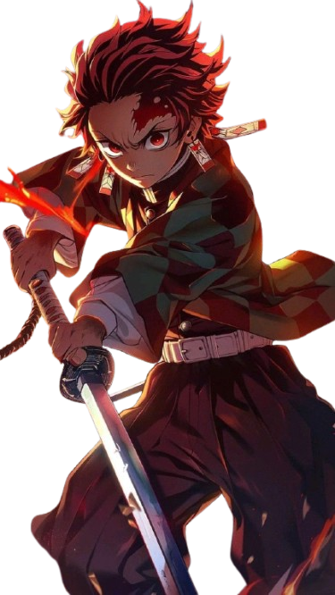
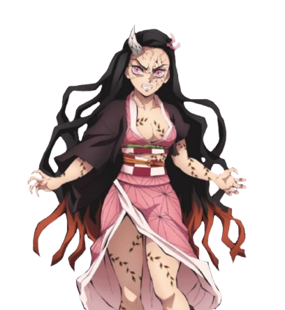
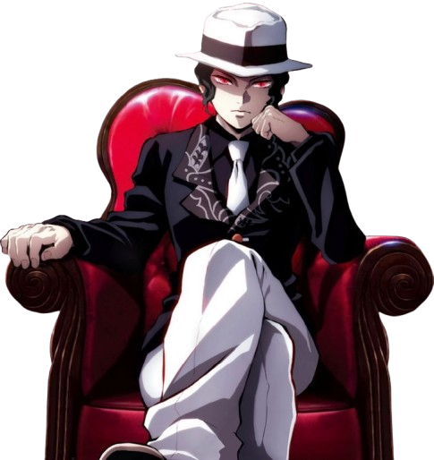

Tanjiro Kamado

Nezuko Kamado

Muzan Kibutsuji

Favorite Episodes

The Hashira Unite
S4.E8
During a silent night when the moon shines, Kagaya finally meets Muzan Kibutsuji, who appears at the Ubuyashiki mansion.

Set Your Heart Ablaze
S2.E7
Akaza continues to offer Rengoku the chance to become a demon to improve his skills. Rengoku refuses his offer and tries his best to keep up with him. The Flame Hashira has one goal: to protect his comrades even if it costs him his own life.

Gathering
S2.E15
Putting Nezuko to rest, Tanjiro, along with Inosuke and Zenitsu, rushes to Uzui's aid, against his battle with the Upper Six Demons- Gyutaro and Daki.